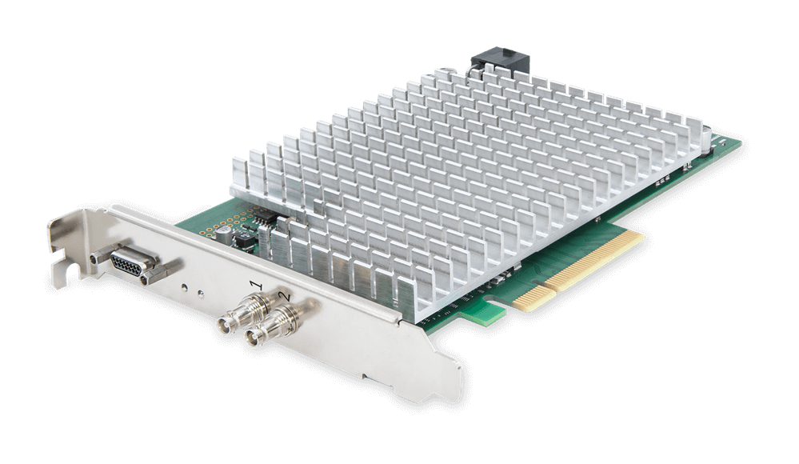
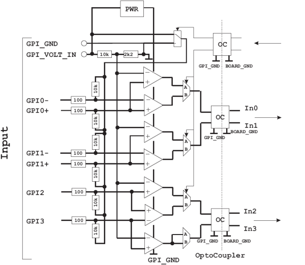
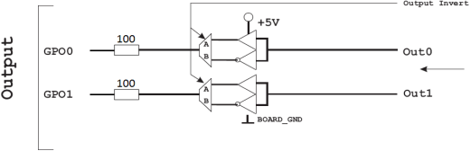
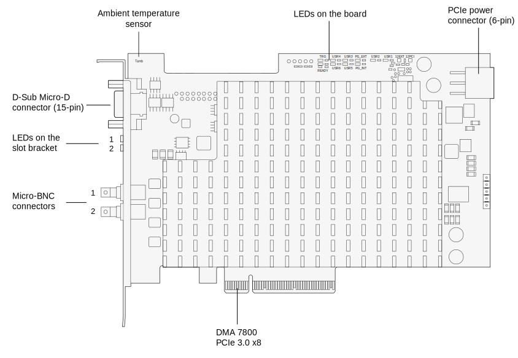
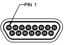

CXP-12 Interface Card 2C#
It is based upon the CoaXPress 2.0 standard supporting bandwidths of up to 12.5 Gbps per channel.

General Specifications#
| Specification | CXP-12 Interface Card 2C |
|---|---|
| Host Interface | PCIe 3.0 x8 (Direct Memory Access) |
| Bandwidth | 7 876 MB/s (theoretical) 6 520 MB/s (typical / max.) |
| On-board Memory | 1 GB DDR4-RAM |
| Power Requirements | PCIe slot: 12 VDC (± 5 %), <1.5 A. Actual values depend on processing. PCIe 6-pin connector: 12 VDC (± 5 %), <2.5 A. Actual values depend on the connected PoCXP camera. |
| Dimensions | PCIe standard height, half length card (167.64 mm length x 111.15 mm height) |
| Weight | 270 g |
| Camera Interface | 2 x CXP-12 (CXP-1 to CXP-12, Micro-BNC connector) |
| Conformity | CE, RoHS, WEEE, REACH |
| Software | Basler pylon Camera Software Suite (version 6.3 or higher) |
Info
The PCIe bus data throughput depends on the motherboard, the chip set, and the BIOS configuration of the host computer. It can differ from slot to slot. It can also depend on the number of installed PCIe boards, e.g., a PCIe x8 connector may support only x4 performance. For more information, check the manual of your mainboard.
Hardware Installation#
For help with the hardware installation, refer to the Basler boost CXP-12 Quick Install Guide.
Software Installation#
To operate the interface card with a Basler boost CXP-12 camera, install the Basler pylon Camera Software Suite (version 6.1 or higher) on the host computer.
When installing the pylon Camera Software Suite for Windows, make sure to select the CXP Camera Support feature. This will install all runtime software, drivers, and related software tools that are required for operating the interface card.
Configuration#
→ See Configuring a CXP-12 Interface Card.
Requirements#
System Requirements#
- PCIe interface on host computer: The host computer must have at least one PCIe 3.0 x8 slot available.
- Power supply on host computer: When using Power over CoaXPress (PoCXP), the host computer must provide one female 6-pin PCIe connector for power supply. You can find the matching power connector on the interface card.
Environmental Requirements#
| Description | Temperature |
|---|---|
| Temperature during operation | 0–50 °C (32–122 °F) |
| Humidity during operation | 5–90 %, relative, non-condensing |
| Storage temperature | -50–80 °C (-58–176 °F) |
| Storage humidity | 5–95 %, relative, non-condensing |
Allow sufficient air circulation to keep the temperature during operation below 50 °C. Additional cooling devices aren't normally required, but should be provided, if necessary.
Electrical Requirements#
Input Lines#
You can use pins 8, 9, 11, 12, 13, and 14 on the front GPIO connector to receive trigger input signals.
You can receive either up to 3 differential signals, or two differential signals and one single-ended signal.
Circuit Diagram#

Electrical Characteristics#
| Electrical | Minimum | Typical | Maximum |
|---|---|---|---|
| Supply voltage | 4.5 VDC | - | 28 VDC |
| Input threshold | - | 20 % of supply voltage | - |
| Differential input offset voltage | - | 10 mV | - |
| Current at GPI pin | - | 4 mA | - |
| Total current at GPI voltage IN | - | - | 50 mA |
Timing Characteristics#
| Timing | Minimum | Typical | Maximum |
|---|---|---|---|
| Propagation delay | 40 ns | 60 ns | 80 ns |
| Min. pulse width | - | 200 ns | - |
| Max. frequency | - | 2.5 MHz | - |
Info
- The CXP-12 Interface Card 2C has been designed with a varistor that opens at an input voltage of 30 VDC (on the input lines). This activates the onboard surge protector to protect the board. At a total supply voltage of 36 VDC the electronic chips would become defective.
- For more information about the electrical and timing characteristics of the built-in comparators, refer to the TI LM2901 data sheet.
- For more information about the electrical and timing characteristics of the built-in opto-couplers, refer to the ISO7220BD data sheet.
Output Lines#
You can use pin 1 and 2 on the front GPIO connector to send TTL trigger output signals.
Circuit Diagram#

Electrical Characteristics#
| Electrical | Minimum | Typical | Maximum |
|---|---|---|---|
| Output voltage high (VOH) | 3.8 VDC | - | 5 VDC |
| Output voltage low (VOL) | - | - | 0.58 VDC |
| Output current (IO) | - | - | 18 mA |
5V Out (max. current 500 mA): The 15-pin connector offers a voltage out pin that provides 5 VDC. It can be used for a maximum current of 500 mA.
Timing Characteristics#
| Timing | Minimum | Typical | Maximum |
|---|---|---|---|
| Rise Time / Fall Time | - | 2.5 ns | - |
Info
- For more information about the electrical and timing characteristics of the built-in outputs, refer to the TI SN74LVC1G97 data sheet.
- For more information about the built-in RS 485 transceiver, refer to the TI SN65HVD1176 data sheet.
Ports and LEDs#
Ports#
The CXP-12 Interface Card 2C offers the following ports:

LEDs on the Slot Bracket#
There are two status LEDs located on the slot bracket of the interface card. They indicate the status of the two CXP connections:
- Green: Connection at CXP link ready for operation.
- Red: No connection at CXP link.
LEDs on the Board#
The following LEDs provide you with information:
| LED Name | LED Color | Meaning |
|---|---|---|
| TRG | Yellow | There is external voltage supplied on the 15-pin connector. |
| READY | Orange | The FPGA has been configured successfully and is ready for operation. |
| USR1 to USR6 | Green | User-defined. The LEDs can be controlled via software. They are not related to camera ports and can be used for any purpose. |
| PG_EXT | Green | "Power Good External": Voltage on the PCIe power connector is stable. The PoCXP voltage (24 VDC) generated internally is also stable. |
| PG_INT | Green | "Power Good Internal": Voltage on the PCIe slot is stable. The voltage generated internally is also stable. |
| 12EXT | Green | Green: The interface card's PCIe power connector is connected to a power supply via the host computer. |
| 12PCI | Green or red | Green: The interface card gets power via PCIe slot (12 VDC IN). Red: The interface card doesn't get power via PCIe slot. |
Physical Interface#
Interface Card Connectors#
The card is interfaced to external devices via the following connectors:
- Two Micro-BNC connectors (HD-BNC) to transmit image data, control signals, and configuration commands. The connectors can also be used to provide power to PoCXP-complaint cameras via Power over CoaXPress (PoCXP). Please refer to the manual to connect the Interface Card to the PC power supply.
- A 15-pin D-Sub Micro-D connector used to send and receive trigger signals.
Two status LEDs on the slot bracket indicate the status of the CXP connections.
Connector Pin Numbering and Assignments#

| Pin (3P FPGA) | Opto-coupleda | Signal | Reference Signal |
|---|---|---|---|
| 1 | No | GPO 0 | 5 VDC / Global GND |
| 2 | No | GPO 1 | 5 VDC / Global GND |
| 3 | No | Reserved for RS 485 (GND) | - |
| 4 | No | Reserved for RS 485 | - |
| 5 | No | 5V_OUT (0.5 A max.) | - |
| 6 | No | GND (global GND) | - |
| 7 | - | - | - |
| 8 | Yes | GPI 2b | GPI voltage IN / GPI GND |
| 9 | Yes | GPI 3b | GPI voltage IN / GPI GND |
| 10 | Yes | GPI voltage IN (4.5–28 VDC)c | - |
| 11 | Yes | GPI 0+ | GPI voltage IN / GPI GND |
| 12 | Yes | GPI 0- | GPI voltage IN / GPI GND |
| 13 | Yes | GPI 1+ | GPI voltage IN / GPI GND |
| 14 | Yes | GPI 1- | GPI voltage IN / GPI GND |
| 15 | Yes | GPI GND | - |
-
All general purpose inputs (GPIs) of the 15-pin connector are electrically isolated. The incoming signals are transferred to the interface card via opto-coupler. This way, the interface card is securely protected against high incoming voltages. However, to operate the internal GPI circuits, you need to connect a voltage source and ground: On pin 10, you apply the voltage (GPI voltage IN) that serves as operating voltage for the internal operational amplifiers. On pin 15, you connect the according ground (GPI GND).
-
Pins 8 and 9 can be used in two ways: 1) together for receiving a differential signal, 2) only pin 8 for receiving a single-ended signal. In case 2), pin 9 is not connected.
-
The voltage applied must be the same voltage as the signal source voltage.
Info
The CXP-12 Interface Card 2C trigger system needs to get supply voltage on the GPI Voltage IN pin (pin 10). If you want to connect devices that have no PWR pin, you need to provide the power supply to the GPI Voltage IN pin from an external source.